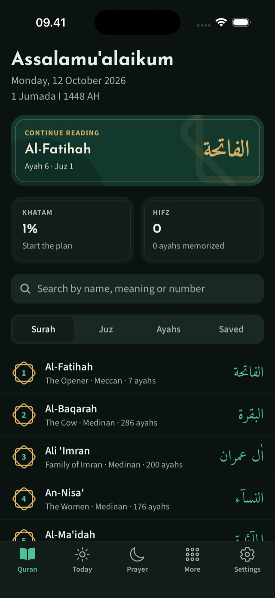
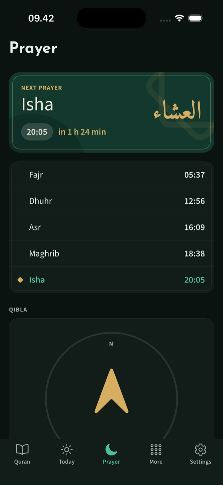
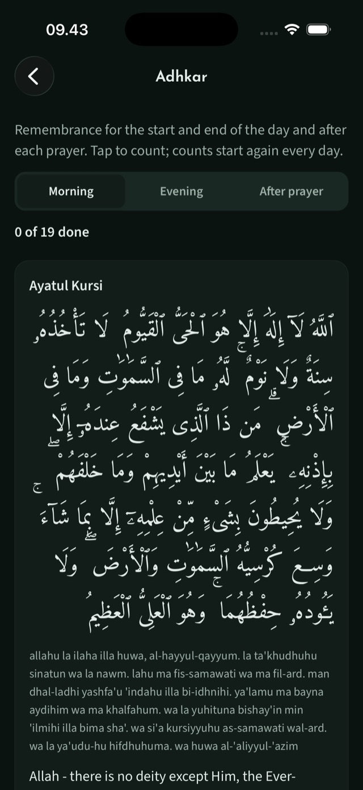
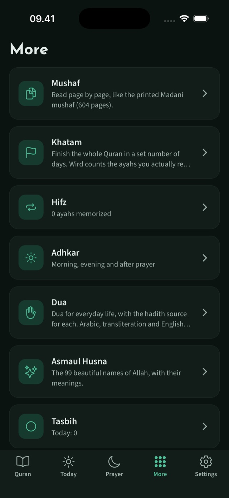

Everything for a daily habit, nothing in the way.
Read it your way
All 114 Surahs with Indonesian or English translation and transliteration, or all 604 pages of the Madani mushaf with justified lines and framed Surah titles. Swipe to turn the page.
Tajweed you can tap
Every rule in its own colour, in the reader and on the mushaf page. Tap a letter to see the rule and how to say it. Word-by-word meanings and eight tafsir editions are one tap away.
27 reciters
Per-ayah audio with repeat, speed, a sleep timer and lock-screen controls. The next ayahs load ahead so playback flows. Download a Surah to listen offline, or save data with smaller files.
Build the habit
A Khatam plan with a daily goal and streak, Hifz practice that repeats and hides ayahs, and a Today screen that shows what is next.
Prayer and Ramadan
Prayer times for where you are, a Qibla compass and reminders. In Ramadan: a countdown to imsak and iftar, and suhoor and iftar reminders.
Adhkar and dua
Morning, evening and after-prayer adhkar with counters that start again each day, everyday dua with their hadith sources, the 99 names of Allah and a tasbih counter.
Indonesian and English
The whole app, not just the translation, in both languages. Light and dark, and it uses the room on a tablet instead of stretching.
Private by design
No account, no ads, no analytics. Your bookmarks, notes and reading progress stay on your phone.
Notes, collections, search
Write a note on any ayah, file bookmarks into collections, and search by name, number, Juz, or the meaning of an ayah. Share an ayah as an image.
A closer look




Get Wird
Wird is built for iPhone, iPad and Android, and store releases are being prepared. Until then you can run it yourself, which takes a few minutes if you already build React Native apps.
Get the code
Clone github.com/heyhadi/wird and run
npm install.Build it once
Run
npm run ios(needs Xcode) ornpm run android(needs Android Studio). Wird uses native modules, so it runs as an Expo development build, not in Expo Go.Read
After the first build,
npx expo start --dev-clientreloads changes in seconds. The README has the details, including testing on a real Android phone.
Questions
Does it need an account?
No. There is no sign-up, no ads and no analytics. Bookmarks, notes, reading progress and settings are saved on your phone.
Does it send my data anywhere?
Only what it needs to show you the Quran. The text, translations, audio, tajweed and mushaf pages come from public Quran services, and prayer times come from aladhan.com, which is sent your coordinates (to about 10 metres) to work them out. Nothing is sent to us, and your notes and bookmarks never leave the phone. The privacy policy lists every service.
Does it work offline?
Partly. A Surah or mushaf page you have opened once opens again without a connection, prayer times are saved for this month and the next, and Surahs you download play offline. Something new needs a connection the first time.
Which languages does it have?
Indonesian and English, for the whole app. The Arabic text is shown with an Indonesian translation or one of six English editions.
Where do the texts come from?
The Quran text, Indonesian translation and Kemenag tafsir come from equran.id. Tajweed, English translations, word-by-word and the mushaf pages come from quran.com, recitations from equran.id and everyayah.com, and the adhkar from fitrahive/dua-dhikr. Credits are in the README.
Is it free? Is the code public?
It is free to use. The source is public to read on GitHub; it is not licensed for reuse.
Something is wrong or missing.
In the app, Settings has a Feedback section that opens an email or a GitHub issue with the app version already filled in. You can also open an issue or write to wirdquran.app@gmail.com.